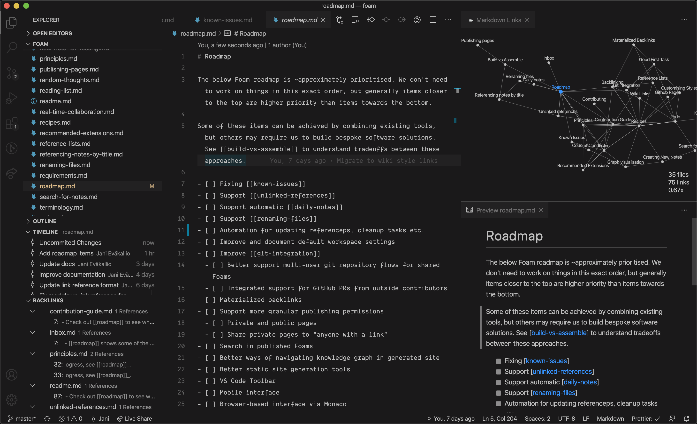
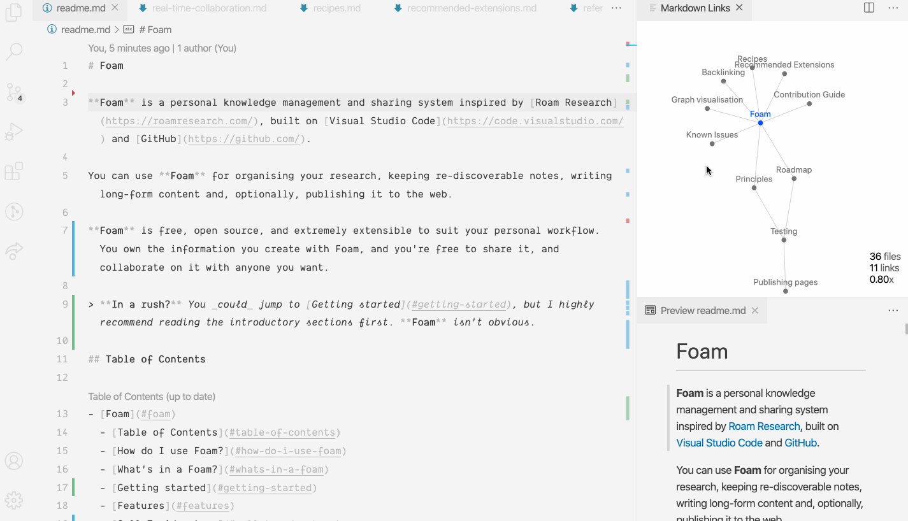

Foam#
Foam is a personal knowledge management and sharing system inspired by Roam Research, built on Visual Studio Code and GitHub.
You can use Foam for organising your research, keeping re-discoverable notes, writing long-form content and, optionally, publishing it to the web.
Foam is free, open source, and extremely extensible to suit your personal workflow. You own the information you create with Foam, and you're free to share it, and collaborate on it with anyone you want.
Info
New! Join Foam community Discord for users and contributors!
How do I use Foam?#
Foam is a tool that supports creating relationships between thoughts and information to help you think better.

Whether you want to build a Second Brain or a Zettelkasten, write a book, or just get better at long-term learning, Foam can help you organise your thoughts if you follow these simple rules:
- Create a single Foam workspace for all your knowledge and research following the Getting started guide.
- Write your thoughts in markdown documents (I like to call them Bubbles, but that might be more than a little twee). These documents should be atomic: Put things that belong together into a single document, and limit its content to that single topic. (source)
- Use Foam's shortcuts and autocompletions to link your thoughts together with
[wiki-links](./wiki-links.md), and navigate between them to explore your knowledge graph. - Get an overview of your Foam workspace using a graph-visualisation (⚠️ WIP), and discover relationships between your thoughts with the use of backlinking.
Foam is a like a bathtub: What you get out of it depends on what you put into it.
What's in a Foam?#
Like the soapy suds it's named after, Foam is mostly air.
- The editing experience of Foam is powered by VS Code, enhanced by workspace settings that glue together recommended-extensions and preferences optimised for writing and navigating information.
- To back up, collaborate on and share your content between devices, Foam pairs well with GitHub.
- To publish your content, you can set it up to publish to GitHub Pages with zero code and zero config, or to any website hosting platform like Netlify or Vercel.
Fun fact: This documentation was researched, written and published using Foam.
Getting started#
⚠️ Foam is still in preview. Expect the experience to be a little rough.
These instructions assume you have a GitHub account, and you have Visual Studio Code installed.
- Use the foam-template project to generate a new repository. If you're logged into GitHub, you can just hit this button:
If you want to keep your thoughts to yourself, remember to set the repository private, or if you don't want to use GitHub to host your workspace at all, choose Download as ZIP instead of **Use this template*.*
-
Clone the repository locally and open it in VS Code.
Open the repository as a folder using the
File > Open...menu item. In VS Code, "open workspace" refers to multi-root workspaces. -
When prompted to install recommended extensions, click Install all (or Show Recommendations if you want to review and install them one by one)
After setting up the repository, open .vscode/settings.json and edit, add or remove any settings you'd like for your Foam workspace.
To learn more about how to use Foam, read the recipes.
Getting stuck in the setup? Read the frequently-asked-questions.
There are known-issues, and I'm sure, many unknown issues! Please report them on GitHub!
Features#
Foam doesn't have features in the traditional sense. Out of the box, you have access to all features of VS Code and all the recommended-extensions you choose to install, but it's up to you to discover what you can do with it!

Head over to recipes for some useful patterns and ideas!
Call To Adventure#
The goal of Foam is to be your personal companion on your quest for knowledge.
It's currently about "10% ready" relative to all the features I've thought of, but I've only thought of ~1% of the features it could have, and I'm excited to learn from others.
I am using it as my personal thinking tool. By making it public, I hope to learn from others not only how to improve Foam, but also to improve how I learn and manage information.
If that sounds like something you're interested in, I'd love to have you along on the journey.
- Check out roadmap to see what's in the plans
- Read about our principles to understand Foam's philosophy and direction
- Read the contribution-guide guide to learn how to participate.
- Feel free to open GitHub issues to give me feedback and ideas for new features.
Thanks and attribution#
Foam is built by Jani Eväkallio (@jevakallio), and all our contributors:


Foam was inspired by Roam Research and the Zettelkasten methodology
Foam wouldn't be possible without Visual Studio Code and GitHub, and relies heavily on our fantastic open source recommended-extensions and all their contributors!
License#
Foam is licensed under the MIT license.